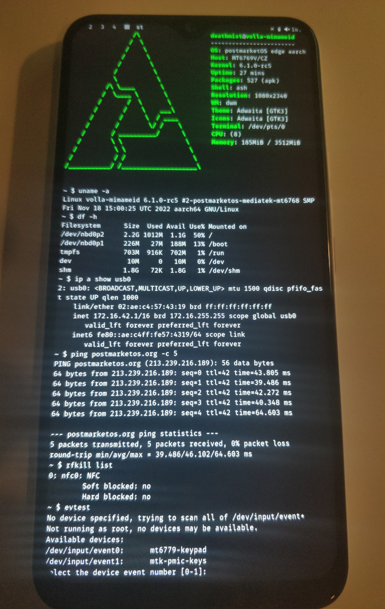

Volla Phone 22 (volla-mimameid)
Jump to navigation
Jump to search
|
 Booted early mainline kernel v6.1-rc5 with Sxmo! | |
| Manufacturer | Volla |
|---|---|
| Name | Phone 22 |
| Codename | volla-mimameid |
| Released | 2022 |
| Category | testing |
| Original software | Android 11 / Ubuntu Touch on Linux 4.14 |
| postmarketOS kernel | 6.1_rc5 |
| Hardware | |
| Chipset | MediaTek Helio G85 (MT6769Z) |
| CPU | Octa-core (2x Cortex-A75 @ 2.0 GHz + 6x Cortex-A55 1.8 GHz) |
| GPU | ARM Mali-G52 MC2 (Bifrost) @ 1.0 GHz |
| Display | 1080x2340 6,3" |
| Storage | 128 GB eMMC 5.1, microSDXC slot |
| Memory | 4 GB LPDDR4X |
| Architecture | aarch64 |
| Type | handset |
| Unixbench Whet/Dhry score | 4318.3 |
{kind=link}
| USB Networking |
Works
|
|---|---|
| Flashing |
Works
|
| Touchscreen |
Broken
|
| Display |
Partial
|
| WiFi |
Broken
|
| FDE | |
| Mainline |
Works
|
| Battery |
Broken
|
| 3D Acceleration |
Broken
|
| Audio |
Broken
|
| Bluetooth |
Broken
|
| Camera |
Broken
|
| GPS |
Broken
|
| Mobile data |
Broken
|
| SMS |
Broken
|
| Calls |
Broken
|
| USB OTG |
Broken
|
| NFC |
Partial
|
| Accelerometer |
Broken
|
|---|---|
| Magnetometer |
Broken
|
| Ambient Light |
Broken
|
| Proximity |
Broken
|
| Hall Effect |
Broken
|
| Barometer |
Unavailable
|
| Power Sensor |
Unavailable
|
| Camera Flash | |
|---|---|
| Keyboard |
Unavailable
|
| Touchpad |
Unavailable
|
| USB-A |
Unavailable
|
| HDMI/DP |
Unavailable
|
| Ir TX |
Unavailable
|
| Ir RX | |
| Stylus | |
| Haptics | |
| Ethernet | |
| FOSS bootloader |
Broken
|
|
This device is based on the Helio G85. See the SoC page for common tips, guides and troubleshooting steps |
How to enter flash mode
- Fastboot: Power on the device with both Power and Volume Up buttons held down. Then select Fastboot by pressing Volume Up and confirm with Volume Down.
- Recovery: Do the same as for Fastboot, but select the Recovery option in the menu instead.
- MediaTek Preloader: The preloader triggers automatically everytime the phone turns on or reboots.
Installation
Follow the usual flashing guide via pmbootstrap.
NOTE: fastboot booting is broken on this device, so e.g. pmbootstrap flasher boot won't work and as such kernels will always have to be flashed to the boot partition of the device. |
Mainline kernel
There is some early mainline support being worked on for the MT6768/MT6769Z chipset; see the MediaTek Helio G85 SoC page and Hacking for more details.
Please note that as eMMC internal storage access isn't yet working you'll have to Netboot a postmarketOS rootfs over USB RNDIS!
As pmbootstrap flasher flash_dtbo is a pre-requisite to booting mainline please backup your existing dtbo partition contents to be able to boot downstream kernels/recovery images again with e.g. mtk r dtbo_a dtbo_a-backup.img & mtk r dtbo_b dtbo_b-backup.img using mtkclient!
NOTE: Currently earlyfb only works on the original non-multiboot-capable lk bootloader, regular simplefb still works though assuming kernel doesn't panic super early ;) |
Patches of interest
- RT9471 I2C 3A battery charger: https://patchwork.kernel.org/project/linux-pm/cover/1664549409-4280-1-git-send-email-u0084500@gmail.com/
Partition layout
volla-mimameid:~# fdisk -l -o Device,Start,End,Sectors,Size,Name /dev/mmcblk0
Disk /dev/mmcblk0: 116.5 GiB, 125074145280 bytes, 244285440 sectors Units: sectors of 1 * 512 = 512 bytes Sector size (logical/physical): 512 bytes / 512 bytes I/O size (minimum/optimal): 512 bytes / 512 bytes Disklabel type: gpt Disk identifier: 00000000-0000-0000-0000-000000000000 Device Start End Sectors Size Name /dev/mmcblk0p1 64 6207 6144 3M proinfo /dev/mmcblk0p2 6208 7231 1024 512K misc /dev/mmcblk0p3 7232 8255 1024 512K para /dev/mmcblk0p4 8256 49215 40960 20M expdb /dev/mmcblk0p5 49216 51263 2048 1M frp /dev/mmcblk0p6 51264 67647 16384 8M vbmeta_a /dev/mmcblk0p7 67648 84031 16384 8M vbmeta_system_a /dev/mmcblk0p8 84032 100415 16384 8M vbmeta_vendor_a /dev/mmcblk0p9 100416 116799 16384 8M vbmeta_b /dev/mmcblk0p10 116800 133183 16384 8M vbmeta_system_b /dev/mmcblk0p11 133184 149567 16384 8M vbmeta_vendor_b /dev/mmcblk0p12 149568 195855 46288 22.6M md_udc /dev/mmcblk0p13 195856 261391 65536 32M metadata /dev/mmcblk0p14 261392 326927 65536 32M nvcfg /dev/mmcblk0p15 326928 457999 131072 64M nvdata /dev/mmcblk0p16 458000 556303 98304 48M persist /dev/mmcblk0p17 556304 572687 16384 8M protect1 /dev/mmcblk0p18 572688 589823 17136 8.4M protect2 /dev/mmcblk0p19 589824 606207 16384 8M seccfg /dev/mmcblk0p20 606208 868351 262144 128M md1img_a /dev/mmcblk0p21 868352 870399 2048 1M spmfw_a /dev/mmcblk0p22 870400 882687 12288 6M scp_a /dev/mmcblk0p23 882688 884735 2048 1M sspm_a /dev/mmcblk0p24 884736 917503 32768 16M gz_a /dev/mmcblk0p25 917504 921599 4096 2M lk_a /dev/mmcblk0p26 921600 987135 65536 32M boot_a /dev/mmcblk0p27 987136 1118207 131072 64M vendor_boot_a /dev/mmcblk0p28 1118208 1134591 16384 8M dtbo_a /dev/mmcblk0p29 1134592 1146879 12288 6M tee_a /dev/mmcblk0p30 1146880 1150975 4096 2M sec1 /dev/mmcblk0p31 1150976 1204223 53248 26M boot_para /dev/mmcblk0p32 1204224 1335295 131072 64M nvram /dev/mmcblk0p33 1335296 1359871 24576 12M logo /dev/mmcblk0p34 1359872 1622015 262144 128M md1img_b /dev/mmcblk0p35 1622016 1624063 2048 1M spmfw_b /dev/mmcblk0p36 1624064 1636351 12288 6M scp_b /dev/mmcblk0p37 1636352 1638399 2048 1M sspm_b /dev/mmcblk0p38 1638400 1671167 32768 16M gz_b /dev/mmcblk0p39 1671168 1675263 4096 2M lk_b /dev/mmcblk0p40 1675264 1740799 65536 32M boot_b /dev/mmcblk0p41 1740800 1871871 131072 64M vendor_boot_b /dev/mmcblk0p42 1871872 1888255 16384 8M dtbo_b /dev/mmcblk0p43 1888256 1900543 12288 6M tee_b /dev/mmcblk0p44 1900544 18677759 16777216 8G super /dev/mmcblk0p45 18677760 244164543 225486784 107.5G userdata /dev/mmcblk0p46 244164544 244252607 88064 43M otp /dev/mmcblk0p47 244252608 244285375 32768 16M flashinfo
Community Info
postmarketOS users that own the device
- Deathmist (Notes: Working on mainlining)
See also
- Device package
- Kernel package (close to mainline)
- Kernel package (downstream)
- pmaports!3652 Mainline enablement merge request
- pmaports!3340 Initial merge request
- Downstream v4.14 Ubuntu Touch (Android) kernel source
- Ubuntu Touch devices page of the device
- mtkclient